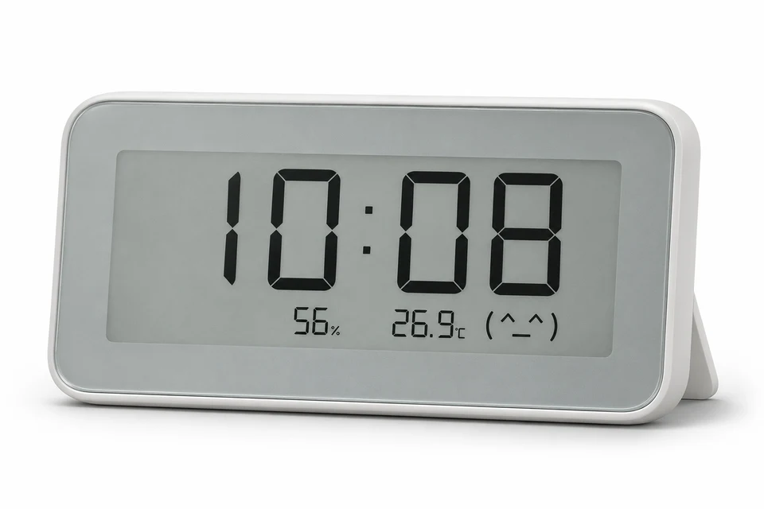
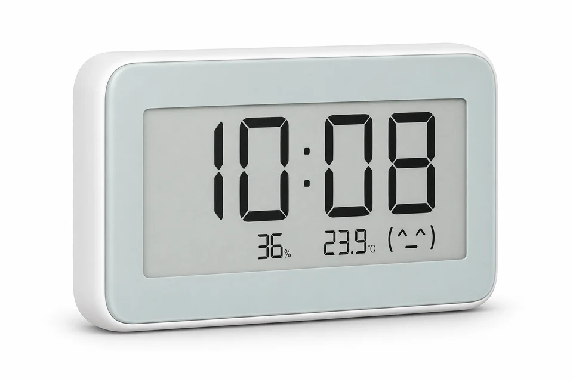
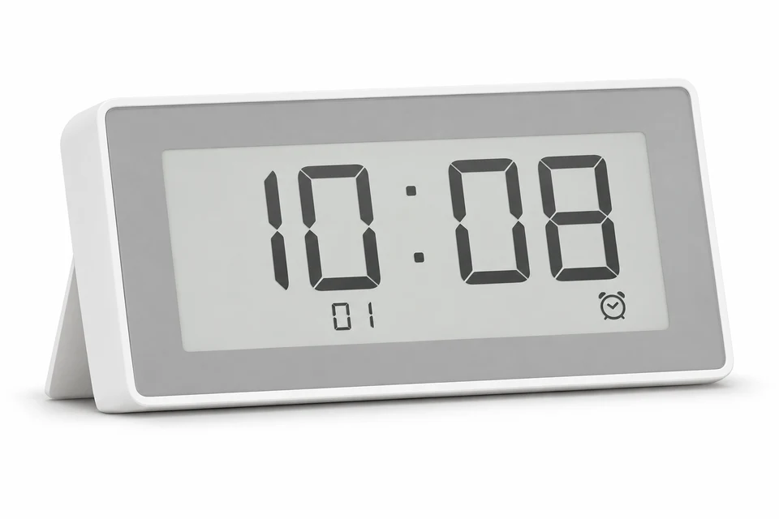

Hora do dispositivo
--:--Xiaomi Mijia · Relógios e sensores Bluetooth
Sincronize, ajuste e aproveite o seu relógio Xiaomi Mijia.
Leia medições em direto, corrija o desvio do relógio e recupere os registos guardados no sensor.
LYWSD02, LYWSD02MMC e MHO-C303. No navegador ou automaticamente com Home Assistant.



O seu relógio
Desligado
Ligue o seu relógio.
Mantenha-o perto e selecione-o na lista Bluetooth.
Nenhum sensor selecionado
Pronto para sincronizar. As medições atualizam em direto.
Temperatura
--Humidade
--Bateria
--Medições adicionais
Relógio e ecrã
Relógios guardados
Guardado apenas neste navegador
Outros dispositivos e ajuda
Os novos perfis usam comandos documentados e testes simulados; falta validação física. PVVX deve estar instalado. O token CGD1 existente fica apenas nesta sessão do navegador.
Perfis experimentais e pesquisa de dispositivosTeste físico do MHO-C303: confirmado no Home Assistant; validação no navegador pendente.
Ligação Bluetooth local. Sem conta.
Histórico por hora
Nenhum registo disponível.
Registo de atividade
LYWSD02 Clock Sync
Configure uma vez. Mantenha a hora certa.
Sincronização automática, incluindo mudanças de hora.
- 1
- 2
Reiniciar o Home Assistant
Quando a transferência terminar.
- 3
Adicionar o seu relógio
Selecione um relógio detetado e escolha quando sincronizar.
Adicionar um relógio
Requisitos
Home Assistant 2025.2+, HACS e Bluetooth: adaptador local ou proxy Bluetooth ativo.